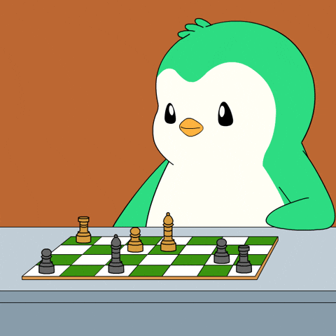
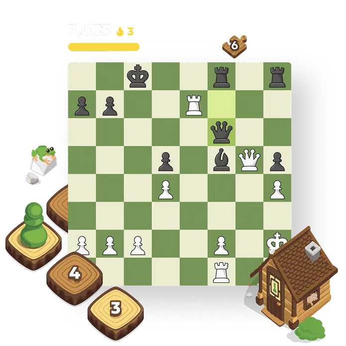

Dashboard Publik
Ringkasan Ulasan Chess.com
Analisis sentimen ulasan Chess.com dari Google Play Store.
Lihat distribusi sentimen, ringkasan rating, dan hasil terbaru dari ulasan pengguna Chess.com.

Dataset
5100 ulasan tersimpan.
Preprocessing
5100 ulasan sudah dibersihkan.
Prediksi
5100 ulasan sudah memiliki label.

Alur Analisis
Proses analisis sentimen ulasan.
Ulasan dari Google Play Store dibersihkan, diubah menjadi fitur TF-IDF, lalu diklasifikasikan menggunakan model SVM.
Impor dataset hasil scraping
Bandingkan ulasan asli dan hasil preprocessing
Lihat sentimen, rating, dan evaluasi model
5100Total Ulasan Dianalisis
Jumlah ulasan yang tersimpan dalam dataset.
LengkapStatus Proses
Seluruh data telah diproses dan diprediksi.
PositifSentimen Dominan
52% dari hasil prediksi saat ini.
5100hasil
Positif
52%
Netral
23%
Negatif
25%
Hasil Terbaru
John_chess99 - Rating 5
game catur bagus sangat seru main setiap hari
Positif
MasterPawn - Rating 3
aplikasi lumayan fitur cukup lengkap
Netral
ChessNewbie - Rating 1
iklan terlalu banyak mengganggu permainan
Negatif
ProGamer42 - Rating 5
terbaik aplikasi catur puzzle harian menarik
Positif
CasualPlayer - Rating 4
suka main catur online fitur analisis membantu
Positif
Komposisi Sentimen
jumlah & persentaseDistribusi Rating
rating 1-5Aktivitas Komentar Terbaru
7 tanggal terakhir dari dataset24 Sep
128
128
25 Sep
176
176
26 Sep
108
108
27 Sep
284
284
28 Sep
205
205
29 Sep
156
156
30 Sep
227
227